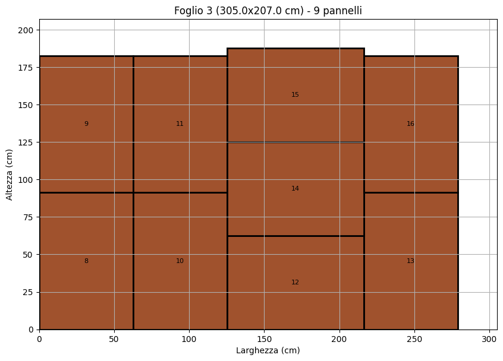
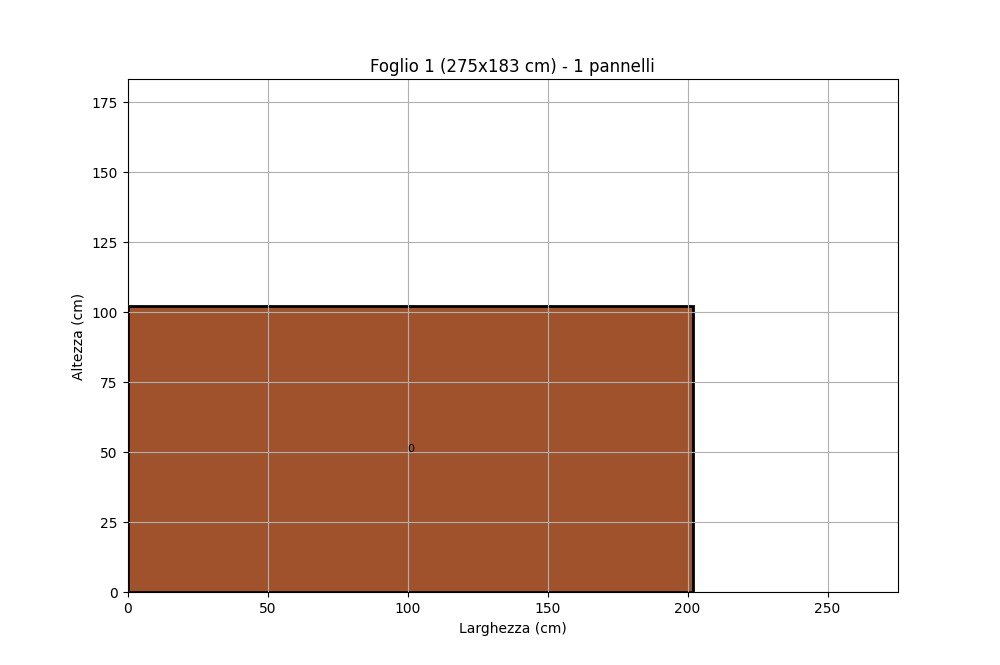
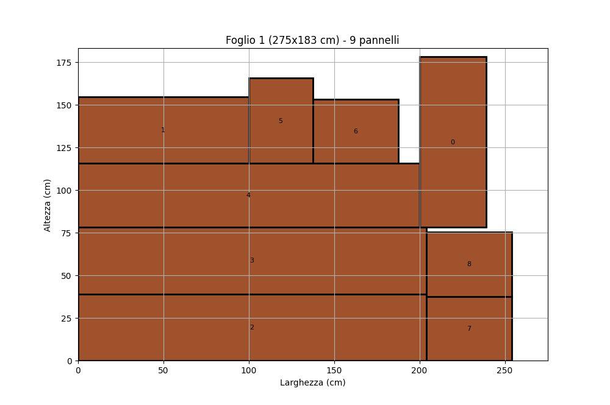
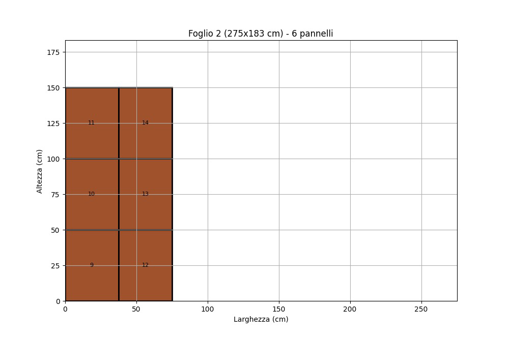
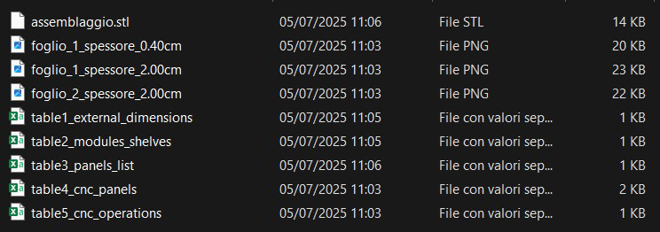
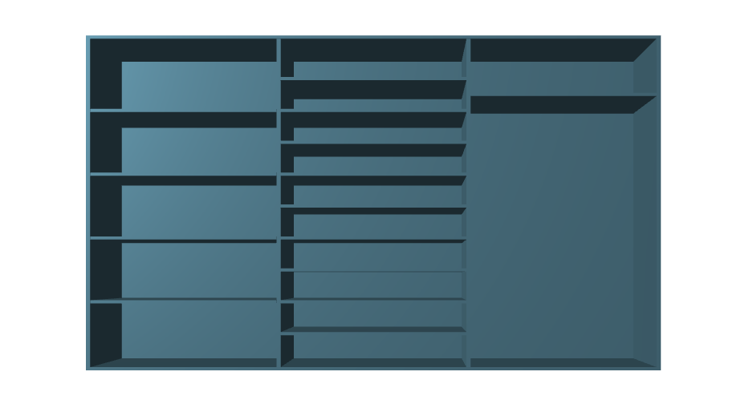
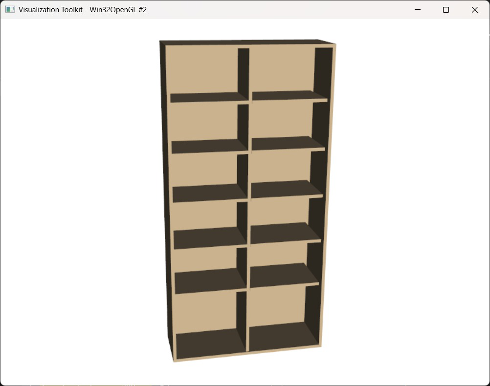
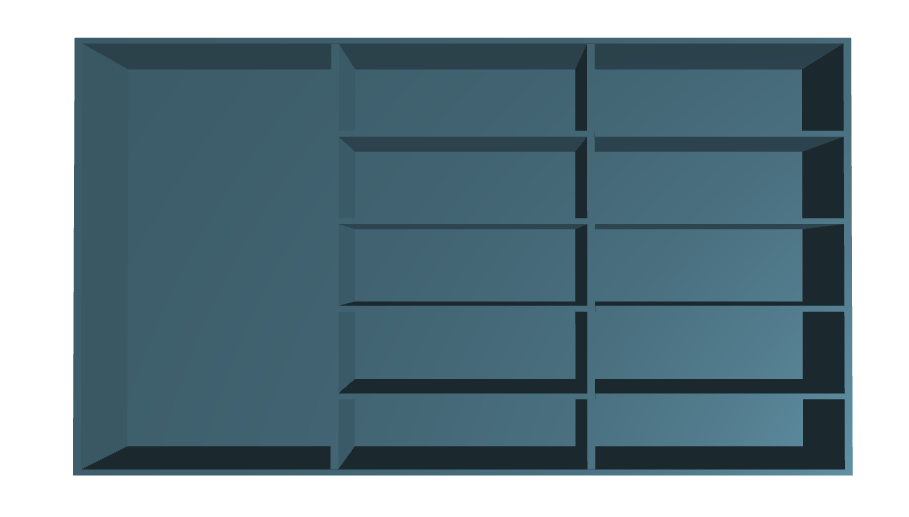

Engineering Challenge
Translate an unstructured customer request into reliable manufacturing data: furniture dimensions, module allocation, panel lists, CAD geometry, efficient raw-sheet layouts and safe CNC operations.
AI-Assisted Manufacturing · CNC Process Planning
From a natural-language furniture request to CAD, nesting and a validated CNC plan
A modular Python pipeline combining LLM reasoning, deterministic engineering rules, CadQuery geometry, panel nesting and human-in-the-loop safety checks for customized laminated-panel production.

Translate an unstructured customer request into reliable manufacturing data: furniture dimensions, module allocation, panel lists, CAD geometry, efficient raw-sheet layouts and safe CNC operations.
The Challenge
The use case focuses on customized bookshelves, wardrobes, display cases and TV stands manufactured from laminated panels. A customer specifies overall dimensions and intended contents in natural language; the system must then derive every panel and machining operation required for production.
Reliability is maintained by separating language interpretation from deterministic calculations, nesting and parameter checks. CAD previews and operator confirmations are inserted before irreversible production decisions, keeping human judgment inside the automated workflow.
Modular Pipeline
Block 1
Block 2
Block 3A
Block 3B
My Core Development
The nesting step receives the panel bill of materials generated upstream, separates components according to thickness and places them within the available raw-sheet dimensions. Each output records panel identifiers and coordinates so the geometry can feed the following cutting-plan stage.
In the complete wardrobe example, the code placed 20 of 20 panels across four 3050 × 2070 mm sheets. Total material utilization reached 67.06%, with the three most populated sheets individually reaching 76.43%, 83.18% and 81.47% efficiency.
Nesting Outputs

0.4 cm Sheet

2.0 cm Sheet 1

2.0 cm Sheet 2

Project Export
Workflow Validation
Validation covered wardrobes, bookshelves, cabinets, TV stands, shoe racks, display cases, pantry units and sideboards. The checks separated dimensional parsing, panel computation, operation count, tool selection, machining parameters and timing accuracy instead of compressing performance into one score.
CAD Validation

Wardrobe

Display Case

Custom Cabinet
TV Stand
Safety & Human Oversight
Spindle speed, feed rate, cutting depth and operation quantities are compared programmatically with the limits associated with each tool. A violation produces a warning before any data can reach the machine.
If the automated checks pass, the operator reviews both the detailed CNC table and the aggregated time estimate, then explicitly chooses whether to proceed or abort. This makes the LLM an engineering assistant inside a controlled process rather than an autonomous machine controller.
Methods & Tools